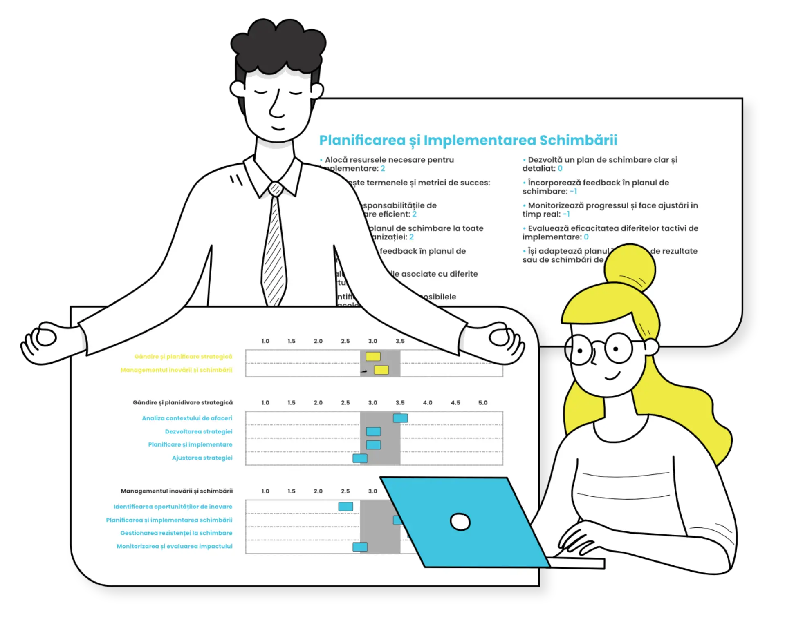

GROUP REPORT FACTORY · REBUILD
Exporturile AC devin un raport Trend pregătit pentru client.
Prelucrare locală, auditabilă și offline. Wording-ul importat rămâne neschimbat, iar rezultatele BHB sunt livrate și ca bundle de elemente reutilizabile.

Încarcă exporturile pentru a vedea structura raportului.